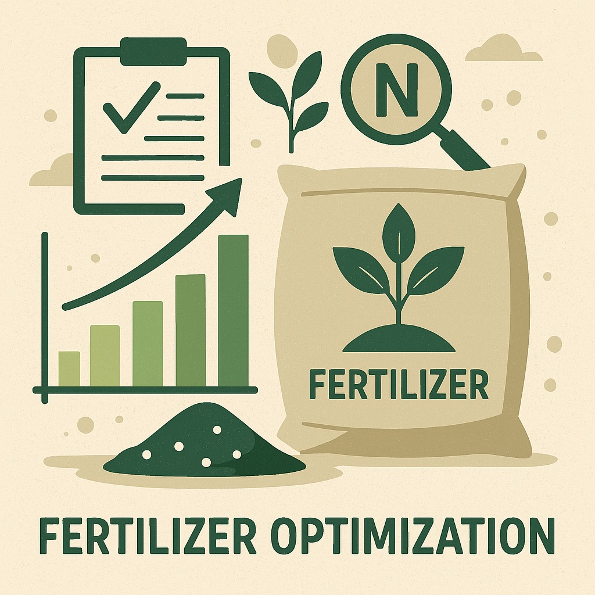

Our AI-Powered Solutions
Delivering hyper-local insights for Indian farming conditions

Saves 30% Water
Precision Irrigation
AI analyzes soil moisture from satellites and weather forecasts to recommend optimal watering schedules
- Reduces water waste
- Prevents over/under watering
- Adapts to monsoon patterns

Saves ₹2000/acre
Fertilizer Optimization
Machine learning recommends exact NPK ratios based on soil tests and crop growth stage
- Reduces input costs
- Prevents soil degradation
- Timing based on weather

Early Alerts
Pest & Disease Detection
Computer vision identifies threats from field photos and satellite vegetation indices
- 7-day early warning
- Organic treatment options
- Location-specific advice